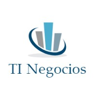
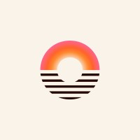
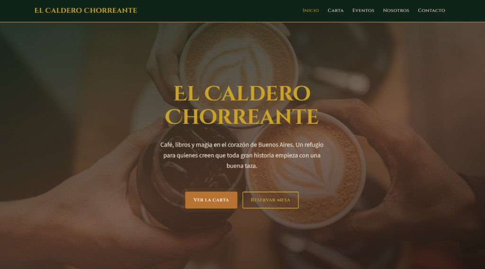
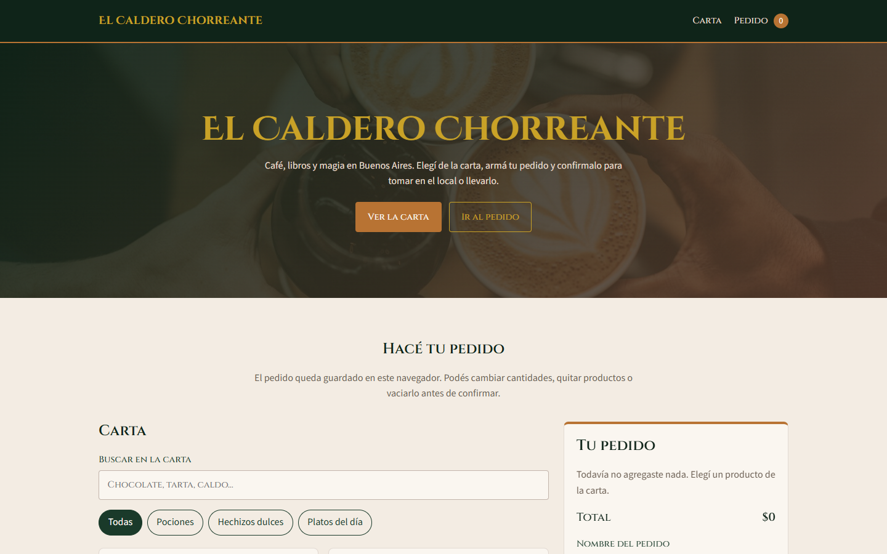
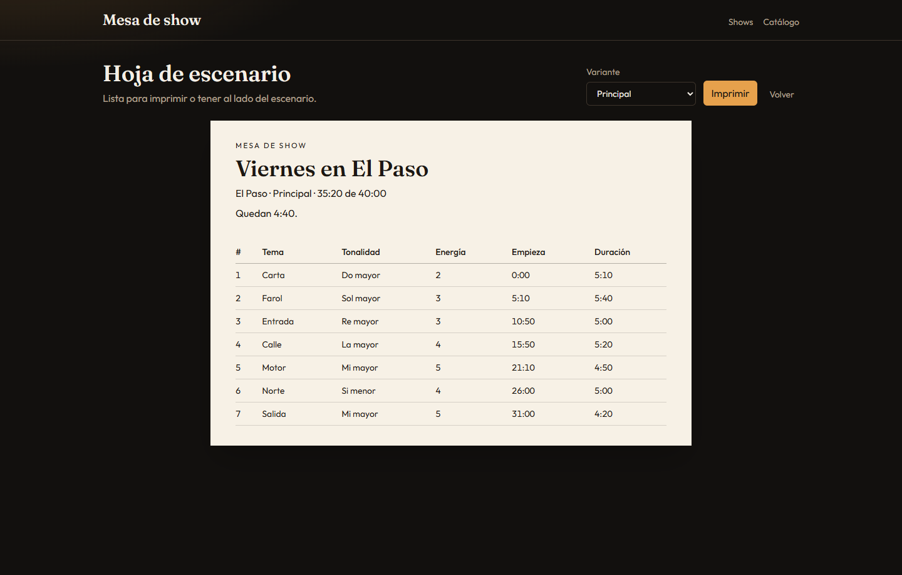

Hola, soy
Agustín Farber.
Desarrollador Full Stack construyendo productos web y móviles de punta a punta — desde la arquitectura hasta la experiencia final del usuario.
Construyendo software con foco en resultados reales
Soy desarrollador Full Stack con más de 3 años de experiencia en desarrollo de software, combinando proyectos propios y experiencia profesional en aplicaciones web y móviles. Trabajé con clientes de Argentina, México, España y Estados Unidos, en distintas etapas del ciclo de desarrollo.
Me adapto rápido a nuevos stacks y metodologías ágiles, con foco en la calidad del código y la resolución de problemas. Estoy terminando Ingeniería en Sistemas de Información en la UTN, lo que me da una mirada más amplia sobre procesos y arquitectura, además del código.
Busco seguir creciendo dentro de un equipo de desarrollo donde pueda aportar mi experiencia y asumir nuevos desafíos técnicos.
- FormaciónIng. en Sistemas — UTN
- Graduación est.2026
- IdiomasEspañol nativo · Inglés intermedio/avanzado
- CiudadaníaArgentina · Austria
Experiencia y formación

Formación

Certificados
Proyecto destacado
Gestión de Alumbrado Público — San Francisco, Córdoba
Como proyecto final de mi carrera, encaré un problema real de mi ciudad: la gestión del alumbrado público dependía de procesos manuales y dispersos, sin visibilidad clara de dónde estaban las luminarias ni su estado.
Diseñé un sistema que centraliza ese proceso y lo ubica geográficamente, para que el municipio pueda gestionar reclamos, mantenimiento y estado de la red de forma más ágil y con datos reales.
- Geolocalización: mapeo de luminarias y reclamos sobre un mapa interactivo.
- Centralización: un solo sistema para registrar, priorizar y hacer seguimiento de incidencias.
- Backend en CodeIgniter (PHP) con frontend en Vue.js, pensado para uso municipal real.

El Caldero Chorreante
Sitio web de un café-librería mágico ficticio inspirado en Harry Potter: carta, agenda de eventos, sección institucional y contacto. Proyecto final del curso de Desarrollo Web.

Simulador de Pedido — El Caldero Chorreante
Simulador de pedido para un café-librería ficticio. Es la entrega final de JavaScript en Coderhouse: ver la carta, elegir productos, modificar cantidades, calcular el total y confirmar el pedido.

Mesa de Show
Aplicación web para armar el set de un recital antes de subir al escenario. Ordenás los temas, la app suma el tiempo del venue, marca los saltos largos de tonalidad y dibuja la curva de energía.
Tecnologías y herramientas
Lenguajes
Frameworks y librerías
APIs y mapas


Bases de datos
Herramientas


Hablemos
Estoy buscando nuevos desafíos y disponible para nuevas oportunidades. Si tenés un proyecto en mente, escribime.